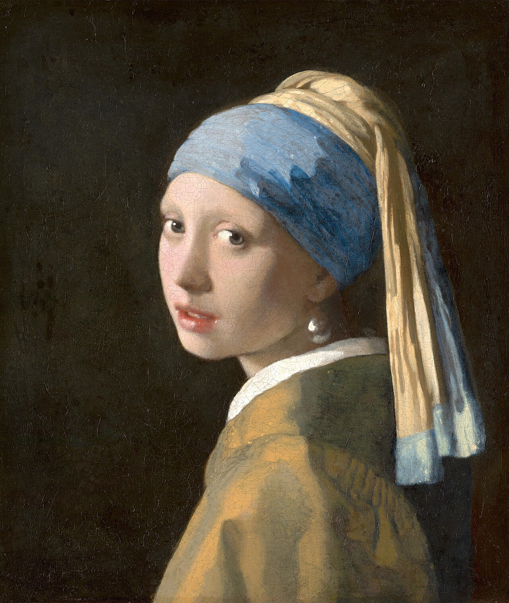
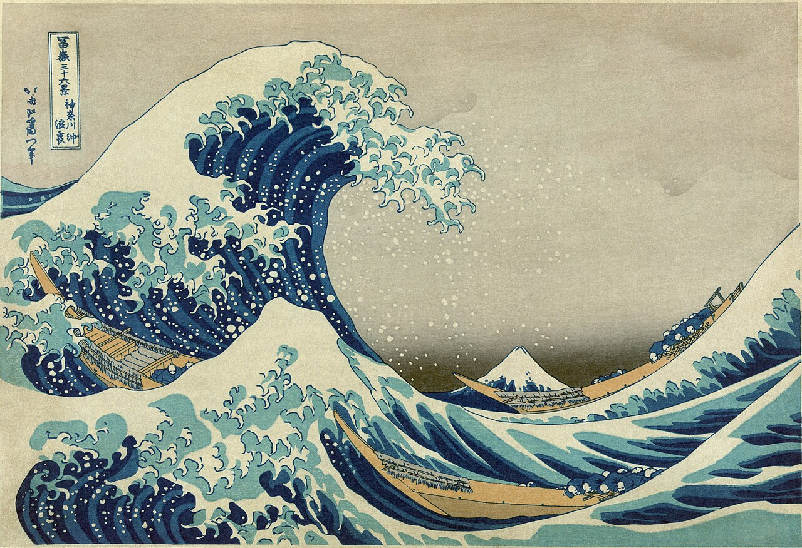
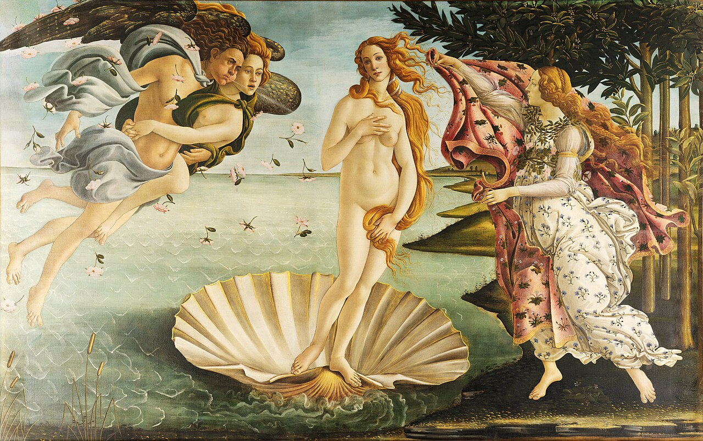

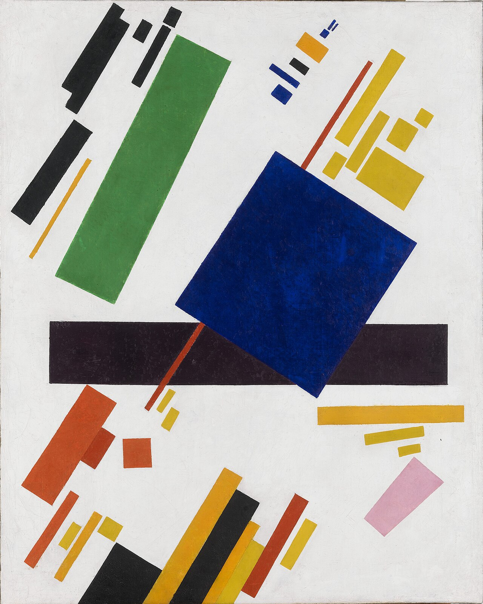


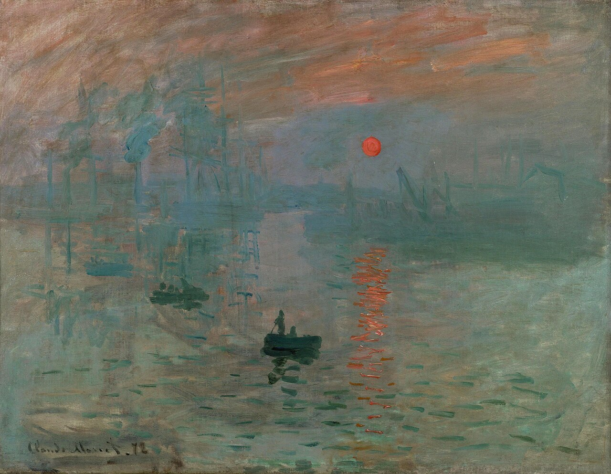
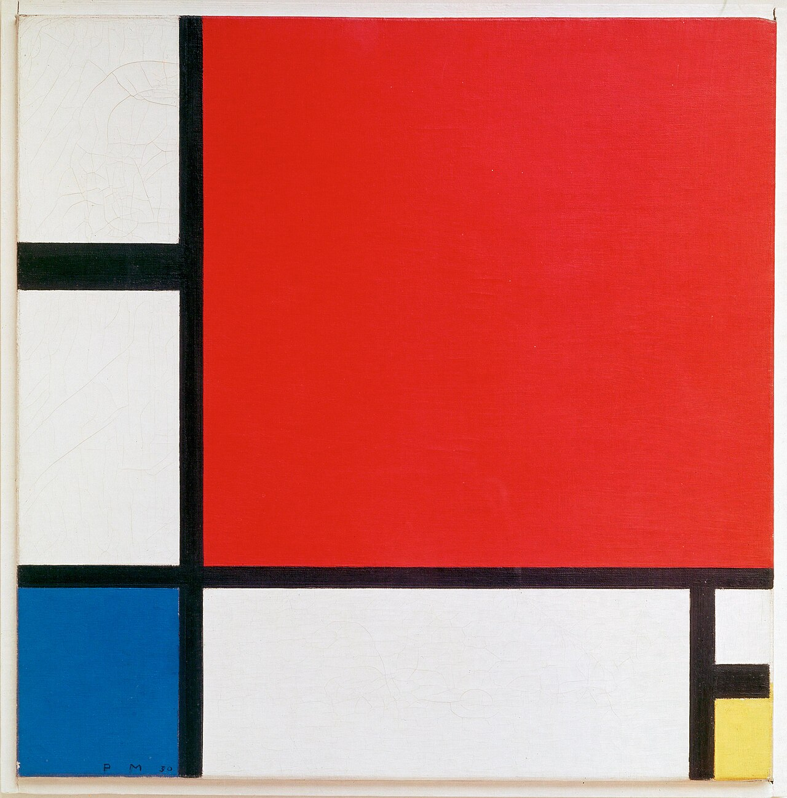
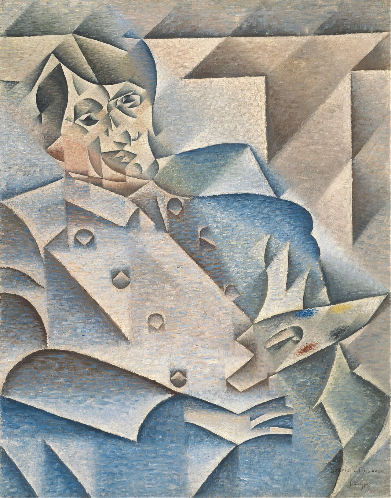
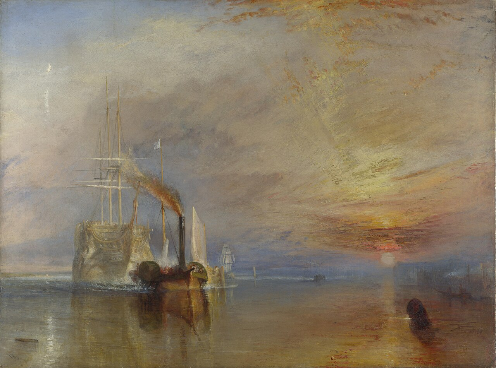
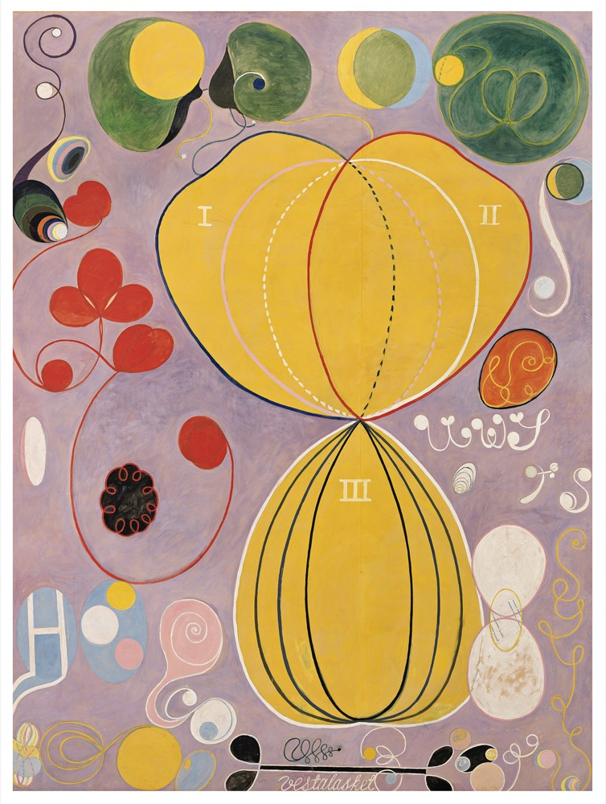
Five artworks a day.
The story behind each.
The story behind each.
A small, daily way into art. Two minutes with your coffee.
About you
How well do you know art?
No wrong answers. You can change it later in Profile.
Just curious
Explain the terms, keep it short
I know the big names
Skip the basics, show me what to look at
Art is my thing
Technique, context and the deep cuts
Same painting, three ways to tell it.
Your taste
What do you like to look at?
Pick three or more. We'll mix in surprises.
Renaissance
Dutch Golden Age
Ukiyo-e
Impressionism
Pointillism
Art Nouveau
Cubism
De Stijl
Suprematism
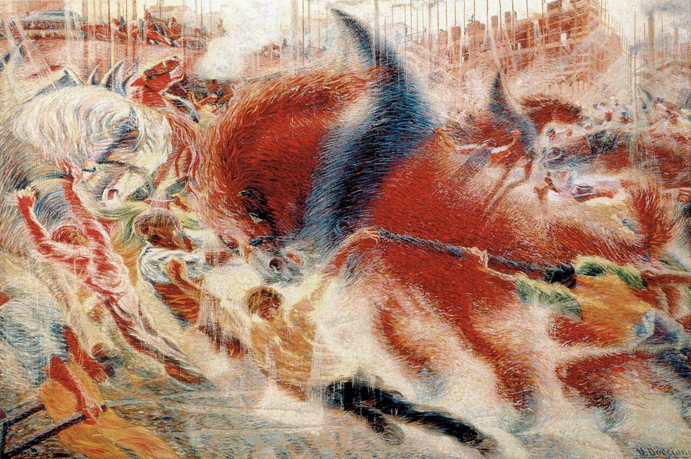
Futurism
Abstract
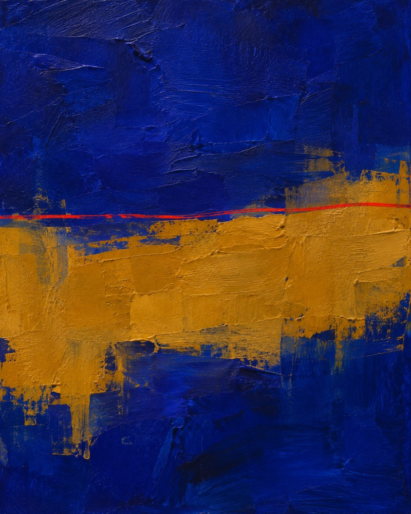
New artists
Your moment
When should your daily art arrive?
6
7
8
9
10
20
25
30
35
40
AM
PM
Preview
AMO8:30
Your five for today are here. First up: Seurat's Sunday in the park.
AMO Premium
Keep going past five.
Every artwork and artist, no daily limit
HD downloads and wallpapers
Any painting as your watch face
Yearly
7 days free, then $29.99 a year
$2.50/mo
Monthly
$4.99 a month
 D
D